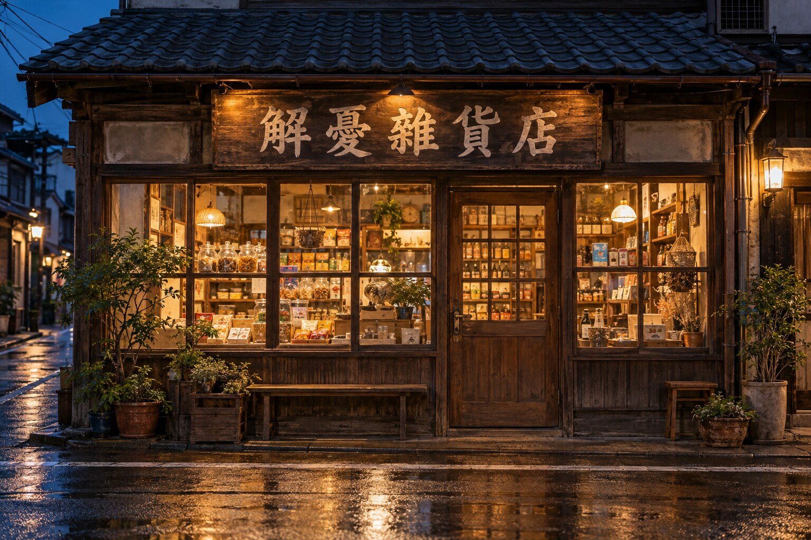

寫給過去的我
一間為往事留燈的小店
今晚，走進一段回憶。
如果有些話，想說給過去的自己聽，
今晚，就進來坐坐吧。

推開木門 →輕輕點一下門，故事就開始了。
歡迎光臨 · 點此進店01 / 今夜的營業公告
✦
今晚，
不販賣任何商品。
這裡沒有標價的商品，
也沒有能替人生解答的萬靈丹。
今晚，我想借這間小店，
邀請你走進一場回到過去的時光之旅。
我們會翻開一些回憶，走近一些選擇，
也重新看看，那個曾經努力生活的自己。
你不需要準備答案，也不必整理好心情。
把腳步放慢，把現在的你，帶進來就好。
02 / 寫在旅程之前
先別急著，
為過去的自己判分。
如果能回到某一天，你會不會想對自己說：「當初，不要那樣選就好了。」
我們常常站在今天，回頭評價昨天的決定。但那時候的你，沒有現在的經驗，也不知道後來會發生什麼事。你只能帶著當時知道的事、擁有的勇氣，還有說不出口的害怕，試著選一條路。
不是每個選擇，都能只用「對」或「錯」說完。
不是每一個結果，都能代表當時的你。
有些決定讓我們靠近想要的生活，有些讓我們受傷、繞路，甚至留下遺憾。選擇帶來的後果需要面對，做錯的事情也可以承認、修補；但一個不如預期的結果，不代表整個你都不值得被理解。
這場旅程，不是要說所有決定都正確，也不是要你立刻原諒一切。我只是想邀請你，先放下責備，問問當時的自己：「那一天，你在害怕什麼？又在期待什麼？」
有些感謝，會在理解之後慢慢出現。有些感謝，現在還說不出口。沒有關係，你可以只說：
「我還沒有完全理解你，
但今天，我願意試著靠近你。」
但今天，我願意試著靠近你。」
03 / 一段真實經歷
致，那個曾經
被我責怪的自己
關於一次出發、八個月的旅程，和後來才說出口的謝謝。
04 / 留一封信，給過去的你
如果能見到那時候的你，
你想說些什麼？
可以是一聲謝謝，一句對不起，
也可以是：「那時候，你一定很辛苦吧。」
不必寫得漂亮，也不用急著替故事找到結局。
讓那些一直沒說出口的話，
在這裡，有一個可以安放的位置。

想想看：當時的你在努力什麼？現在的你，想讓他知道什麼？
帶著這份心意，繼續往前 →05 / 旅程的最後一封信
謝謝你，
把自己帶到了今天。
今晚，我們沒有真的回到過去，
卻也許第一次，願意好好看看那個時候的自己。
那個曾經勇敢、迷惘、後悔，
或只是努力撐過每一天的你，
都在這段生命裡，留下了自己的腳印。
如果今天，你終於說出了一聲謝謝，
願你把這份溫柔，也留一些給現在的自己。
如果還說不出口，也沒有關係。
理解可以慢慢來，和解不必有期限。
今晚願意停下來看看，就已經是一個開始。
過去的你，不必完美，才值得被看見。
現在的你，也不必急著成為誰，才值得被善待。
等你走出這扇門，生活還會繼續。
願你在下一次面對選擇時，
記得給自己一點信任，也留一點喘息的空間。
這間小店，會為你的回憶留一盞燈。
— 解憂雜貨店
06 / 在四季裡，再次相遇
四季大典
每一次相聚，都有不一樣的體驗。
每一次祈福，都有一份真誠的心意。
春 · 相遇夏 · 體驗秋 · 收穫冬 · 感恩
四季大典，是我們在不同季節裡相聚的活動。每一次安排的內容都不一樣，讓大家在參與、動手與交流之間，留下新的回憶。
有時，我們一起做一件手作工藝品；有時，親手製作甜點與美食；也可能圍坐在桌遊旁，在歡笑裡慢慢熟悉彼此。活動的樣貌會改變，但想邀請大家一起相聚的心意，始終都在。
手作工藝品
把專注放進每一個小細節，
帶走一件作品，也帶走一段回憶。
甜點與美食製作
從親手製作到一起品嚐，
讓相聚多一份香氣與溫度。
桌遊與交流
在遊戲中拉近距離，
讓陌生慢慢變成熟悉。
相聚的核心 · 祈福拜拜
帶著誠心，
與仙佛結一份善緣。
豐富的體驗之外，四季大典最重要的環節，是祈福拜拜。我們一起收拾心情，帶著敬意與真誠，為自己、家人，以及心中掛念的人獻上祝願。
這也是一個與仙佛結緣的機會。在虔敬的片刻裡，表達感恩，寄託心願，也讓忙碌的自己，重新安定下來。
歡迎你在下一次四季大典，
和我們一起體驗、分享，也一起祈福。
各次活動內容依當次安排而定。
回到解憂雜貨店 ↺